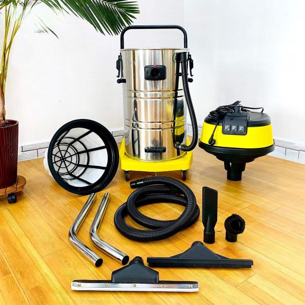
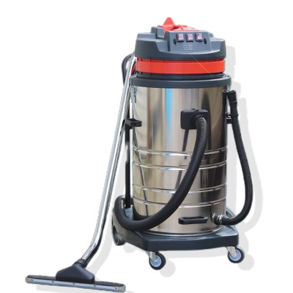
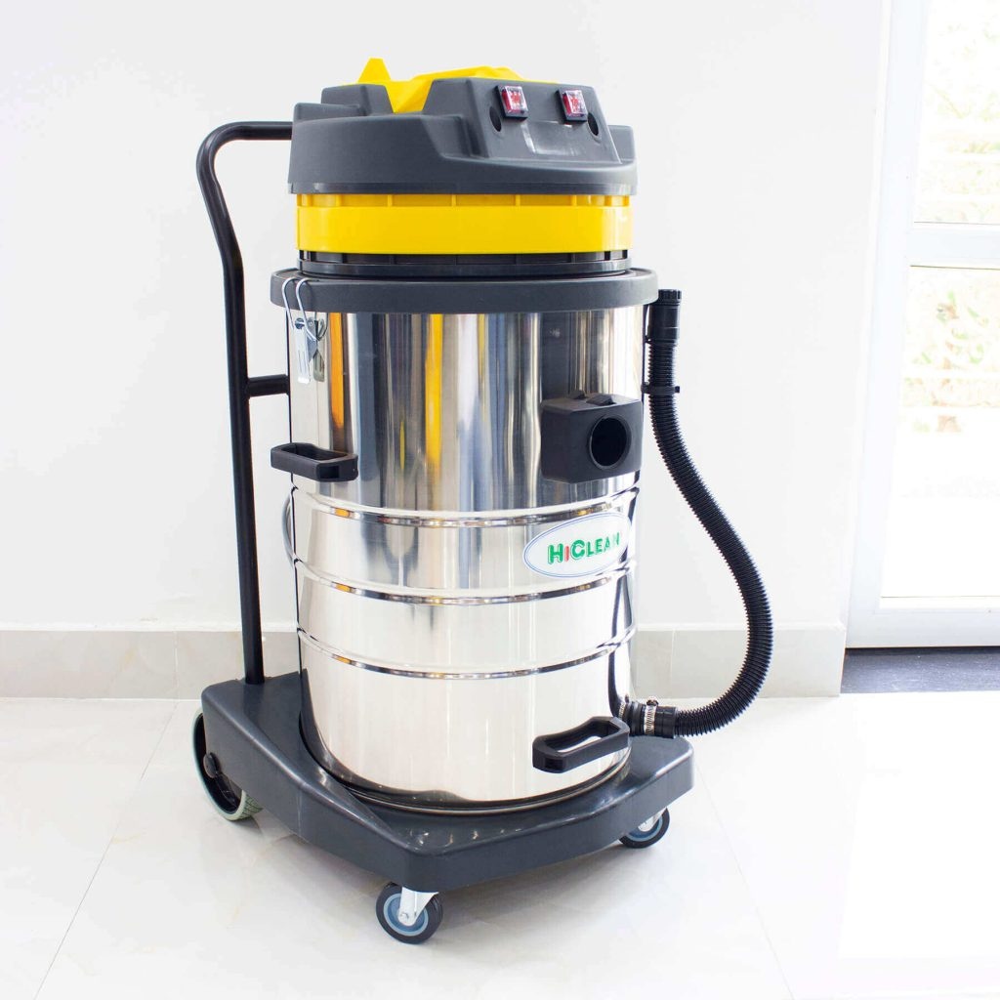
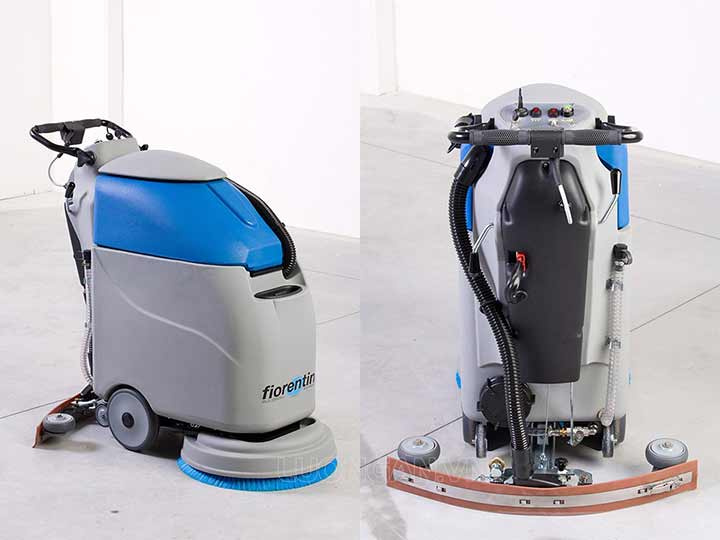
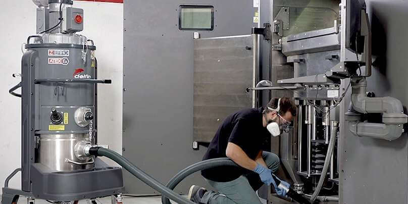
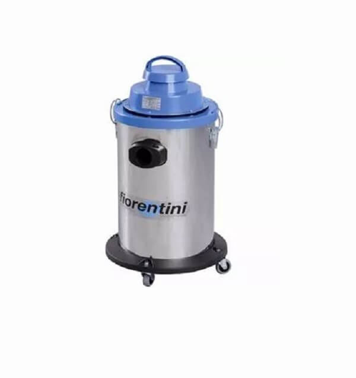
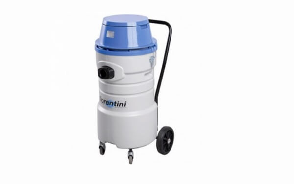
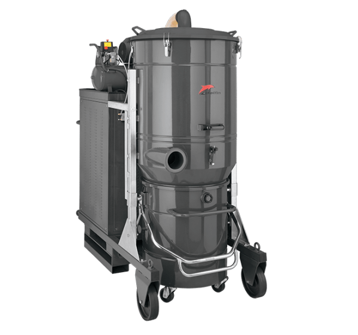
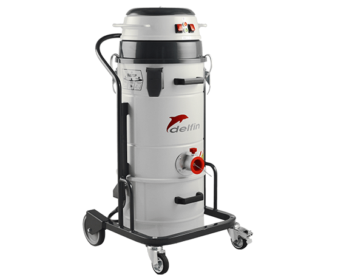
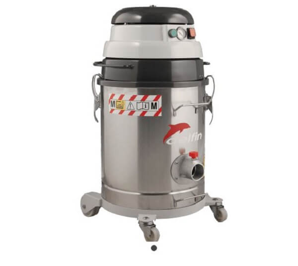

Máy hút bụi công nghiệp loại nào tốt nhất? Tư vấn lựa chọn sản phẩm phù hợp
Vệ sinh nhà xưởng, khu công nghiệp sản xuất với diện tích lớn không phải là công việc đơn giản. Không chỉ đòi hỏi bộ phận thực hiện có kinh nghiệm, chuyên môn nghiệp vụ cao mà còn cần sự hỗ trợ của các trang thiết bị hiện đại. Trong đó, máy hút bụi công nghiệp được đánh giá là “cánh tay đắc lực” trong quy trình vệ sinh tại nhiều nhà xưởng, xí nghiệp. Vậy có nên mua máy hút bụi công nghiệp? Máy hút bụi công nghiệp loại nào tốt để đầu tư? Dưới đây chúng tôi sẽ gợi ý các tiêu chí đánh giá máy hút bụi nhà xưởng chất lượng cùng Top 5 mẫu máy hút bụi tốt nhất hiện nay!
Máy hút bụi công nghiệp là gì?
Máy hút bụi công nghiệp là thiết bị chuyên dùng hút bụi bẩn với công suất cao, dung tích và lực hút lớn. Nhờ vậy dòng máy vệ sinh chuyên dụng này được sử dụng phổ biến cho các nhà xưởng, khu công nghiệp, sân bay, bệnh viện, trường học,… Thiết kế máy hút bụi công nghiệp được cải tiến hơn rất nhiều so với máy hút bụi gia đình nhằm mang đến hiệu quả sử dụng vượt trội.

Máy hút bụi công nghiệp có những loại nào hiện nay?
Nhu cầu sử dụng máy hút bụi công nghiệp trên thị trường ngày càng tăng cao làm cho các nhà sản xuất cần nỗ lực nghiên cứu và sản xuất ra nhiều loại máy hút bụi khác nhau để đáp ứng nhu cầu đa dạng của người tiêu dùng.
Hiện nay, trên thị trường có ba loại máy hút bụi công nghiệp phổ biến, được phân loại dựa trên số lượng động cơ được trang bị trên thiết bị. Ba loại máy hút bụi này bao gồm:
- Máy hút bụi loại 1 motor: Thích hợp cho các không gian nhỏ và vệ sinh không định kỳ như văn phòng.
- Máy hút bụi 2 motor: Có khả năng vệ sinh hiệu quả hơn và phù hợp với diện tích lớn hơn so với loại 1 motor.
- Máy hút bụi 3 motor: Thích hợp cho các khu vực có diện tích rộng lớn và nhu cầu vệ sinh liên tục như nhà máy, bệnh viện và các cơ sở sản xuất.
Ưu và nhược điểm của các loại máy hút bụi công nghiệp
Một sản phẩm, dù có tốt và chất lượng đến đâu, vẫn tồn tại nhược điểm riêng bên cạnh những ưu điểm. Điều này cũng áp dụng cho máy hút bụi công nghiệp.

Ưu điểm của máy hút bụi công nghiệp bao gồm:
- Đa dạng về loại motor, giúp người dùng lựa chọn sản phẩm phù hợp với nhu cầu sử dụng.
- Motor có công suất lớn, mang lại hiệu suất hút và làm sạch cao, đặc biệt hiệu quả trên các khu vực có diện tích rộng.
- Có khả năng làm sạch mọi loại bụi bẩn như bụi khô, bụi ướt và chất rắn lớn.
- Vận hành với độ ổn định và tuổi thọ cao.
- Dung tích bình chứa bụi lớn giúp tiết kiệm thời gian vệ sinh.
Nhược điểm của máy hút bụi công nghiệp bao gồm:
- Kích thước lớn và trọng lượng nặng, chỉ phù hợp với các khu vực có diện tích lớn.
- Gây khó khăn và bất tiện trong việc di chuyển, đặc biệt khi sử dụng trong gia đình.
- Chiếm nhiều diện tích lưu trữ.
- Phát ra tiếng ồn lớn do công suất mạnh.
- Giá thành tương đối cao.
Tư vấn chọn mua máy hút bụi công nghiệp tốt nhất
“Máy hút bụi công nghiệp loại nào tốt?” – Đây chắc hẳn là thắc mắc chung của rất nhiều khách hàng hiện nay. Để chọn được mẫu máy hút bụi công nghiệp tốt nhất ta sẽ cần xem xét rất nhiều yếu tố khác nhau. Chúng tôi đã tổng hợp một vài tiêu chí cơ bản giúp quý khách hàng dễ dàng hơn trong việc chọn mua máy hút bụi công nghiệp:
Lực hút của máy hút bụi công nghiệp hiện đại
- Trong máy hút bụi công nghiệp lực hút được coi là yếu tố quan trọng nhất, vì trong môi trường công nghiệp với lượng bụi nhiều và khối lượng nặng, việc chọn một chiếc máy có lực hút yếu có thể không đáp ứng được nhu cầu sử dụng.
- Thường người ta thường nhầm lẫn giữa khái niệm lực hút và công suất, cho rằng công suất lớn thì lực hút càng mạnh. Tuy nhiên, điều này lại không hoàn toàn chính xác. Các hãng máy hút bụi Âu Mỹ thường sản xuất máy có công suất nhỏ nhưng lực hút lớn nhờ vào công nghệ chế tạo tiên tiến. Trong khi đó, các hãng châu Á thường ghi công suất lớn nhưng lực hút chưa chắc đã cao.
- Công suất nhỏ thường đi kèm với tiết kiệm điện năng. Do đó, khi lựa chọn, bạn nên cân nhắc máy có lực hút mạnh nhưng có công suất nhỏ để tiết kiệm điện.
Công suất của máy hút bụi công nghiệp

Yếu tố đầu tiên cần xem xét để đánh giá máy hút bụi công nghiệp loại nào tốt, đó chính là công suất thiết bị. Công suất máy cao cũng đồng thời tương ứng với lực hút mạnh. Đây là yếu tố cực kỳ quan trọng bởi môi trường nhà xưởng, khu công nghiệp luôn tồn tại lượng lớn bụi thải. Nếu công suất máy quá nhỏ sẽ không thể đáp ứng khả năng làm sạch.
- Máy hút bụi công nghiệp thường có công suất trên 1000W.
- Máy hút bụi nhà xưởng 1000 – 2000W có thể hút được bụi cát, mạt sắt, mạt cưa,…
- Loại máy hút bụi công suất trên 3500W phù hợp sử dụng trên quy mô lớn 1000m2.
Dung tích bình chứa bụi
Máy hút bụi công nghiệp tốt nhất chính là loại máy hút bụi phù hợp nhất với nhu cầu sử dụng. Với những khu vực rộng lớn, dung tích bình chứa bụi công nghiệp thường khá lớn từ 15 – 70 lít. Nhờ vậy, có thể chứa được nhiều bụi bẩn hơn và tiết kiệm được thời gian đổ bụi khi vệ sinh, làm sạch các không gian rộng.
Kích thước cũng như trọng lượng của máy
Tuỳ thuộc vào kích thước của nhà xưởng và lượng bụi cần hút, bạn cần lựa chọn thể tích máy phù hợp.
Cần lưu ý rằng nếu chọn máy có thể tích quá nhỏ, máy sẽ nhanh đầy và bạn phải thường xuyên xả bụi, trong khi đó, nếu chọn máy có thể tích quá lớn, máy sẽ trở nên nặng nề và khó di chuyển.
Các tính năng cụ thể của máy hút bụi công nghiệp
Máy hút bụi công nghiệp không chỉ ngày càng được cải tiến về kiểu dáng, thiết kế mà còn về tính năng. Để hỗ trợ tốt nhất cho khâu vệ sinh nhà xưởng, khách hàng nên chọn lựa máy hút bụi đi kèm với bộ phụ kiện tiện dụng gồm: ống nối, đầu hút có bàn chải, đầu hút nhọn, cọ lau sàn, đầu hút nước,… Mỗi phụ kiện tương thích với khả năng làm sạch khác nhau giúp vệ sinh sạch sẽ mọi ngóc ngách một cách dễ dàng.
Kiểu dáng thiết kế máy
Kiểu dáng thiết kế, kích thước máy sẽ được cân nhắc lựa chọn dựa trên diện tích khu vực nhà xưởng. Nếu kích thước máy quá nhỏ sẽ có dung tích bình chứa bụi không quá lớn, người dùng sẽ cần xả bụi nhiều lần. Ngược lại, máy hút bụi kích thước lớn sẽ tiện dụng khi vệ sinh không gian rộng lớn, tuy nhiên máy sẽ khá nặng, cồng kềnh và khó di chuyển.

Ngoài ra, chất liệu cấu tạo máy cũng giúp bảo vệ linh kiện, tăng tuổi thọ sản phẩm. Nên chọn sản phẩm từ chất liệu: inox không gỉ hoặc nhựa ABS cao cấp, có khả năng chống chịu va đập tốt. Máy hút bụi nhờ đó mà vận hành ổn định và bền bỉ hơn.
Các tính năng của máy hút bụi công nghiệp
Máy hút bụi công nghiệp không chỉ ngày càng được cải tiến về kiểu dáng, thiết kế mà còn về tính năng. Để hỗ trợ tốt nhất cho khâu vệ sinh nhà xưởng, khách hàng nên chọn lựa máy hút bụi đi kèm với bộ phụ kiện tiện dụng gồm: ống nối, đầu hút có bàn chải, đầu hút nhọn, cọ lau sàn, đầu hút nước,… Mỗi phụ kiện tương thích với khả năng làm sạch khác nhau giúp vệ sinh sạch sẽ mọi ngóc ngách một cách dễ dàng.
Thương hiệu của máy hút bụi công nghiệp
Chắc chắn rằng, các thương hiệu máy hút bụi nổi tiếng được nhiều khách hàng tin chọn sẽ đảm bảo được chất lượng. Một vài thương hiệu máy hút bụi công nghiệp tốt nhất có thể kể đến: Delfin, Fiorentini, Super Clean, IPC, Kumisai,…

Giá thành sản phẩm máy hút bụi
Máy hút bụi công nghiệp loại nào tốt? – Nhiều khi để đánh giá chất lượng của một sản phẩm ta còn cần dựa vào giá thành sản phẩm đó trên thị trường. Bởi có câu “tiền nào của nấy”, sản phẩm có giá thành cao sẽ tương ứng với đó là chất lượng đảm bảo. Tuy nhiên, tùy thuộc vào ngân sách tài chính của mình mà khách hàng có thể lựa chọn phân khúc sản phẩm phù hợp nhất.
Các phụ kiện thích hợp
Để lựa chọn một chiếc máy hút bụi công nghiệp phù hợp, người tiêu dùng cần chú ý đến các phụ kiện và đầu hút bụi của sản phẩm. Các yếu tố cần kiểm tra kỹ bao gồm chất liệu và chiều dài của ống hút, cọ lau sàn, đầu hút nhọn và đầu hút có bàn chải.
Nên mua máy hút bụi công nghiệp loại nào tốt?
“Máy hút bụi công nghiệp loại nào tốt nhất?” – Để giúp quý khách hàng giải đáp được thắc mắc, chúng tôi đã tổng hợp thông tin về TOP 5 máy hút bụi công nghiệp chất lượng, giá tốt nhất trên thị trường hiện nay. Cùng tham khảo nhé!
Máy hút bụi công nghiệp Fior entini F30F1
Máy hút bụi – nước Fiorentini F30F1 được sản xuất trên dây chuyền hiện đại của Italia. Sản phẩm nổi tiếng với công nghệ tự động hóa, là lựa chọn của nhiều thị trường trên thế giới bởi các ưu điểm nổi bật:
- Thiết kế máy nhỏ gọn, trọng lượng nhẹ kết hợp cùng hệ thống bánh xe linh hoạt giúp dễ dàng di chuyển trên mọi địa hình.
- Thân máy và thùng chứa bụi được sản xuất từ inox không gỉ, độ bền cao và khả năng chống chịu va đập tốt.
- Thiết bị hoạt động một cách ổn định và tiết kiệm điện năng.
- Thiết bị có độ ồn thấp và không gây ảnh hưởng đến môi trường xung quanh.

Thông số kỹ thuật:
| Thương hiệu | Fiorentini |
| Model | F30F1 |
| Công suất | 1000W |
| Lưu lượng hút | 210m3/h |
| Đường kính ống hút | Ø 50 mm |
| Dung tích bình chứa bụi | 30 lít |
| Thùng chứa | Inox |
| Độ ồn | 65dB |
| Phụ kiện kèm theo | Bàn hút nước, bụi, đầu chổi tròn, đầu hút kẹt |
| Xuất xứ | Italia |
Máy hút bụi nước Fiorentini C73F1
Cái tên tiếp theo trong danh sách “Máy hút bụi công nghiệp loại nào tốt?” chắc hẳn không thể bỏ qua model máy hút bụi C73F1 đến từ thương hiệu Fiorentini (Ý). Sản phẩm được đánh giá cao với nhiều ưu điểm như:
- Công suất vận hành mạnh mẽ lên đến 3000W, máy có hiệu năng vượt trội giúp hút sạch mọi bụi bẩn và nước vương vãi.
- Thùng chứa bụi dung tích lớn cho phép thực hiện vệ sinh liên tục, không cần xả bụi quá nhiều lần.
- Trọng lượng máy nhẹ kết hợp bánh xe di chuyển linh hoạt, tiện dụng.

Thông số kỹ thuật:
| Thương hiệu | Fiorentini |
| Model | C73F1 |
| Công suất | 3000W (3 motor x 1000W) |
| Lưu lượng hút | 645 m3/h |
| Đường kính ống hút | Ø 40 mm |
| Dung tích bình chứa bụi | 75 lít |
| Thùng chứa | Nhựa ABS |
| Độ ồn | 83dB |
| Phụ kiện kèm theo | Bàn hút nước, bụi, đầu chổi tròn, đầu hút kẹt |
| Trọng lượng máy | 23kg |
| Xuất xứ | Italia |
Máy hút bụi công suất lớn Delfin DG 200
Máy hút bụi Delfin DG 200 là một trong những loại máy hút bụi công nghiệp tốt nhất hiện nay. Thiết bị hoạt động dựa trên nguồn điện 3 pha, khả năng vận hành ổn định và bền bỉ liên tục suốt nhiều giờ. Model máy hút bụi Delfin DG 200 được đánh giá cao nhờ:
- Thiết kế hiện đại, có bánh xe di chuyển tiện dụng
- Thùng chứa bụi có thể được tháo rời cực kỳ thuận tiện cho việc xả bụi thải và vệ sinh.
- Bộ lọc có khả năng lọc sạch bụi bẩn, đặc biệt là bụi mịn.
- Vỏ máy được làm từ inox cao cấp đồng thời được phun sơn tĩnh điện chống rỉ sét, chống chịu va đập tốt, bảo vệ linh kiện máy.

Thông số kỹ thuật
| Thương hiệu | Delfin |
| Model | DG 200 |
| Nguồn điện | 3 pha 380V – 50Hz |
| Công suất | 18.5 kW |
| Lưu lượng hút | 1400m3/h |
| Đường kính ống hút | Ø 120 mm |
| Dung tích bình chứa bụi | 220 lít |
| Thùng chứa | Inox |
| Độ ồn | 78dB |
| Phụ kiện kèm theo | Bàn hút nước, bụi, đầu chổi tròn, đầu hút kẹt |
| Trọng lượng máy | 663kg |
| Kích thước | 97x207x222cm |
| Xuất xứ | Italia |
| Bảo hành | 12 tháng |
Máy hút bụi công nghiệp DELFIN 202 DS
Để trả lời cho câu hỏi “Máy hút bụi công nghiệp loại nào tốt?”, chắc hẳn không thể thiếu dòng máy hút bụi công nghiệp DELFIN 202 DS. Sản phẩm được ứng dụng hút lọc bụi trong nhiều ngành công nghiệp như: xây dựng, thực phẩm, y tế – dược phẩm, phòng thí nghiệm,…
- Thiết kế máy nhỏ gọn mà động cơ lại cực kỳ mạnh mẽ và bền bỉ.
- Hệ thống lọc bụi DUSTOP giúp loại bỏ hoàn toàn bụi bẩn, đặc biệt là bụi mịn.
- Đa chức năng: Hút khô, hút nước và hút bụi bẩn công nghiệp.
- Thân máy được chế tạo từ thép không gỉ, chịu được va đập mạnh.

Thông số kỹ thuật
| Thương hiệu | Delfin |
| Model | 202 DS |
| Nguồn điện | 230V – 50Hz |
| Áp suất | 2500mmH2O |
| Công suất | 2300W |
| Lưu lượng hút | 360m3/h |
| Đường kính ống hút | Ø 50 mm |
| Thân máy | Thép không gỉ |
| Độ ồn | 76dB |
| Trọng lượng máy | 35kg |
| Kích thước | 59x48x110cm |
| Xuất xứ | Italia |
Máy hút bụi công nghiệp DELFIN 300 BL
Máy hút bụi công nghiệp DELFIN 300 BL là dòng máy hút bụi chuyên dùng, đặc biệt phù hợp sử dụng cho môi trường dễ cháy nổ.
- Máy hoạt động với công suất lớn, động cơ không chổi than đảm bảo hiệu suất hút cao và liên tục.
- Thùng chứa bằng INOX cao cấp, bền bỉ và chịu được tác động của ngoại lực.
- Dây nối đất và bộ lọc polyester chống tĩnh điện đảm bảo an toàn tối đa khi hút bụi.
- Bộ lọc cấp M xử lý bụi hiệu quả hơn, đảm bảo an toàn cho người sử dụng.

Thông số kỹ thuật:
| Thương hiệu | Delfin |
| Model | 300BL |
| Nguồn điện | 230V – 50Hz |
| Áp suất | 2250mmH2O |
| Công suất | 1100W |
| Lưu lượng hút | 215m3/h |
| Đường kính ống hút | Ø 50 mm |
| Độ ồn | 74dB |
| Trọng lượng máy | 25kg |
| Kích thước | 44x42x78cm |
| Xuất xứ | Italia |
Một số lưu ý khi lựa chọn máy hút bụi công nghiệp
Máy hút bụi công nghiệp được biết đến với sự đa dạng về mẫu mã, công suất ổn định và khả năng vận hành bền bỉ. Tuy nhiên, khi sử dụng để vệ sinh, cần lưu ý đến các điểm sau để đảm bảo tuổi thọ và hiệu suất của thiết bị:
- Không nên vượt quá công suất quy định của máy để tránh gây hỏng hóc.
- Đảm bảo điện áp ổn định và an toàn khi sử dụng máy vệ sinh.
- Lắp đặt đầu hút bụi đúng cách, chắc chắn và sử dụng nút an toàn khi tháo ra.
- Bảo đảm bộ lọc được lắp đúng vị trí và không bị tắc nghẽn để đảm bảo hiệu suất hút.
- Tránh để đầu ống hút hoặc tay cầm tiếp xúc với nước hoặc chất lỏng.
- Kiểm tra và thông ống dẫn đều đặn để tránh tắc nghẽn.
Kết luận Trên đây ICD CLEANING MACHINE đã giúp quý khách hàng giải đáp thắc mắc “Máy hút bụi công nghiệp loại nào tốt?”. Bằng cách đưa ra tư vấn cách lựa chọn máy hút bụi nhà xưởng cùng top 5 sản phẩm được ưa chuộng nhất hiện nay, hy vọng quý khách hàng đã chọn được mẫu sản phẩm phù hợp!
 Tư vấn cách chọn lựa máy chà sàn nhà gia đình
Tư vấn cách chọn lựa máy chà sàn nhà gia đình Có nên mua máy hút bụi công nghiệp cho gia đình?
Có nên mua máy hút bụi công nghiệp cho gia đình? TOP 5 máy hút bụi công nghiệp 3000W bán chạy đáng đầu tư
TOP 5 máy hút bụi công nghiệp 3000W bán chạy đáng đầu tư